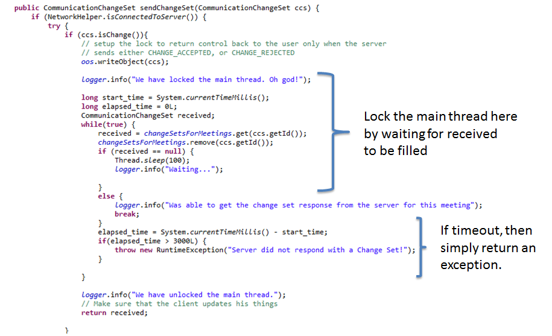

Wednesday, June 17, 2013
Group 5: Amish Gala, Deyvid William, Pankaj Kapania, and Romeo Honvo
Statistics:
| Type | Measurement Phase 1 | Measurement Phase 2 | Measurement Phase 3 |
|---|---|---|---|
| Total LOC | 3222 (43 classes) | 9633 (94 classes) | 12360 (127 classes) |
| Total Production LOC | 2477 (29 classes) | 7292 (69 classes) | 9641 (97 classes) |
| Total Unit Test LOC | 742 (14 classes, 40 unit tests, 7 integration tests) | 2341 (25 classes, 137 unit tests, 18 integration tests) | 2719 (30 classes, 158 unit tests, 18 integration tests) |
| Code Coverage (ALL) | 55.6% | 57.3% | 43.1% |
| Code Coverage (Unit) | 32.2% | 32.5% | 30.8% |
| Code Coverage (Integration) | 35.5% | 36.8% | 21.0% |
Phase 3 presented us with some new requirements to complement our already robust email and meeting client:
We enhanced the package structure to include a new Network package, whose responsibility was to handle all communication between client/server.
Network Classes
Server classes
The overall set of classes which communicate on the server side are shown here:
Client Network Classes
Communication Change Set (CCS)
Problem: How to test our code, for all threading / concurrency and serialization?
Solution: We found it quite difficult to approach this phase with the same strategy for unit testing as we did in the first two phases. There were no real "domain" entities, and most of the code added was related to handling communication over the network. Thus the approach we adopted was to strengthen our use of the logger, especially in all the network classes. This proved very useful when testing - somebody sitting at the server console would literally see everything that was being sent through - almost like watching the code in The Matrix! While this was no where near as effective (since we needed to first start up the clients, launch the server, connect to the server, and then actually run the tests), good concise and precise logging paid off in many situations.
Some unit tests were still created to help test the CommunicationChangeSet (the object responsible for capturing changes to a meeting), and Change (the object contained within a change set).
Problem: How to send data across the wire to CEC clients connected to the server?
Solution: We leveraged the Serializable interface provided by the standard java.io package. All of these objects were quite simple: their logical and physical forms matched quite nicely, so we used the default serialized form instead of creating our own custom ones.
Problem: How to deal with clients who connect, and then disconnect?
Solution: At first, it was a real challenge - we encountered countless "stream corruption" exceptions. We needed a better strategy to deal with the different connection possibilities, and to act accordingly. Many sites online had references to the fact that a lot of socket methods were unreliable, thus we decided to opt for a simple, clean and efficient design. The idea is that upon connecting, the SuperCECServer stored a link between the client's registration email, his socket, and the input and output streams. Whenever a client with the same email "reconnected" we simply overwrote those mappings. We understand that in a real scenario, this poses a security check; however, this is out of scope for this phase and thus we deemed it an appropriate solution.
Problem: How to manage access to shared resources, especially when an arbitrary number of threads can access? Also, how to manage the threads and providing Runnables to be executed?
Solution: here we leaned heavily on the well tested and documented thread pool abstraction: Executor Service. This class provided the thread-safety, thread-management, and orchestration necessary to successfully build a multi-client email program, which allows optimistic changes to shared data. We had numerous amount of threads:
Long running (meaning when spawned, keeps running until the application closes or some other even occurs):Thus for the most part, it made sense to communicate with our SuperCECServer and submit these tasks to the main Executor.
Problem: How to be able to concurrently edit a meeting on the network?
Solution: We simplified our design with the following decision: as soon as the client sends a meeting to the server, the client is no longer the owner of the meeting and it now is a shared document which belongs to the server. All subsequent updates need to go through the server, and this alleviates the need for clients to know about other clients (in a peer-to-peer fashion). This allowed us to make some important decisions regarding the Change Set - most notably: if a client tries to update a meeting, if his original copy does not match the servers, then he needs to perform an update. This led to the design of the Change object (see above).
One major challenge with this was how to address the issue of what happens when a client tries to update, but is not in sync. We decided that the best approach was to mimic SVN - during the update, lock the UI. If the update is successful, simply close the window. If the update was rejected, then give a message to the user that some fields need to be merged, and prevent the system from saving the meeting on his local client. This proved challenging from an implementation perspective, and also from a correctness perspective - is it good practice to lock the main AWT thread? Regardless, we followed this approach and included some basic usability: log that we're waiting for a response every 100ms, and upon reception, unlock the main UI thread. If the server doesn't respond in 3 seconds, then we tell the user that something is wrong with the server and to try later. The code in the NetworkHelper (client side) which runs is shown here:

Problem: How to intelligently take changes to a meeting and apply them (also intelligently)
Solution: Due to time constraints, we were not able to fully realize a merge algorithm strategy based on different fields. We did however plan for it by designing a Merger interface, and creating the shells for some basic merge classes (BodyMerger, SimpleTextFieldMerger). Thus for the purposes of the phase 3 release schedule, we simply send back any conflicts to the client, and ask him to resolve it.
Because of how meetings are edited concurrently over the network, we have disabled a somewhat expected feature: distribution. We felt it was more important to handle the change sets on the server, and completed this implementation; however, we don't have a solid strategy to "notify" all members of this shared document, that changes were made.
We wanted to try and implement a more comprehensive merge algorithm, but due to time constraints we were unable to fully realize it. We have positioned the code to use the proper merge algorithm strategy, however, those classes are simply placeholder for now.
{kind=link}
{kind=link}
{kind=link}